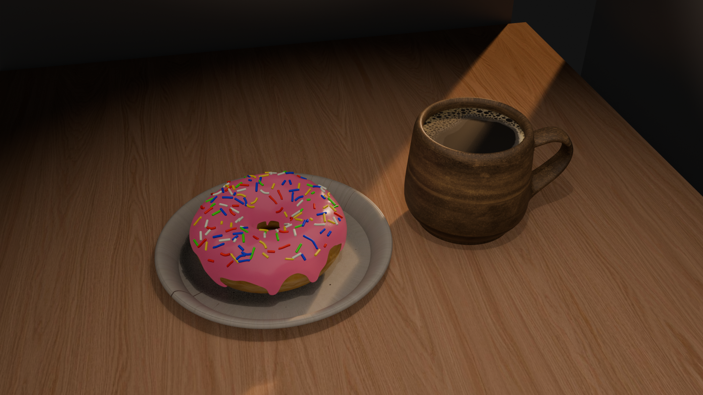

Mobile platformer · In development
The Floor Is Lava
A third-person platformer set in oversized household environments. Includes environmental puzzles, checkpoints, and mobile controls.
Focus: Gameplay mechanics, Blueprints, mobile prototyping.
I'm Blake Mealer, a game developer and designer with a background in controls engineering. I create interactive experiences, gameplay systems, and levels using Unreal Engine.
My background in industrial controls engineering has taught me to solve complex problems, debug systems, and design reliable interactive logic. I bring that problem-solving mindset to game development, where I focus on gameplay mechanics, level design, and player experience.
I have completed an Associate of Applied Science in Game Development and am pursuing a bachelor's degree in Interactive Technology with a game design concentration.
Unreal Engine gameplay prototyping, mobile game development, Blueprint scripting, 3D workflows, and level design.
Available to discuss game industry opportunities
Projects at different stages of development. Screenshots, gameplay videos, and technical breakdowns will be added as they become available.
A third-person platformer set in oversized household environments. Includes environmental puzzles, checkpoints, and mobile controls.
Focus: Gameplay mechanics, Blueprints, mobile prototyping.
A storm-driven dam level with alternate routes, emergency power objectives, and interactive maintenance puzzles.
Focus: Level design, environmental storytelling, interaction systems.
A science-fiction VR thriller exploring an AI-generated game world. Currently in story development and 3D preproduction.
Focus: Narrative design, Blender modeling, cinematic planning.

A personal 3D modeling project created in Blender, featuring a donut with icing and sprinkles alongside a coffee cup. Focused on developing foundational skills in 3D modeling, materials, lighting, and rendering.
Focus: 3D Modeling, Materials & Texturing, Lighting, Camera Composition, and Rendering.
Interested in my work or want to discuss an opportunity? Contact information and professional profile links will be added here.
Email: blakemealer99@gmail.com
Linkedin: www.linkedin.com/in/blake-mealer-774b19263
Facebook: https://www.facebook.com/profile.php?id=61593710234586